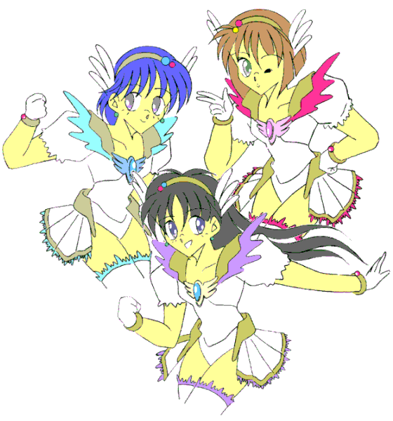

戻る
「当たり前だっ！！ 戦うためとはいえこんな格好になって喜ぶ奴がいるかっ！！ ……あーあ、何で俺がこんな目に」
変身美少女戦士ミラージュガール
作：ライターマン

第一話：俺は転校生で美少女戦士！？
第二話：気になるアイツは敵か？ 味方か？ 恋人か！？
第三話：登場！（誕生？）真・美少女戦士？
第四話：夏の海は危険がいっぱい！？
第五話：逆転？反転？本日は性転なり！？
第六話：発動！！ 脅威！ 驚愕！ 恐怖？のパワーアップ！！
第七話：衝撃（笑撃？）デビュー！？ 転校生三代真奈美！！
第八話：驚きと戸惑いと怒りと喜び、そして……
最終話：そして……全ては終わり…………
番外編１：運命の出会い？
続・番外編１：運命の再戦？
番外編２：雪と少女と精霊と